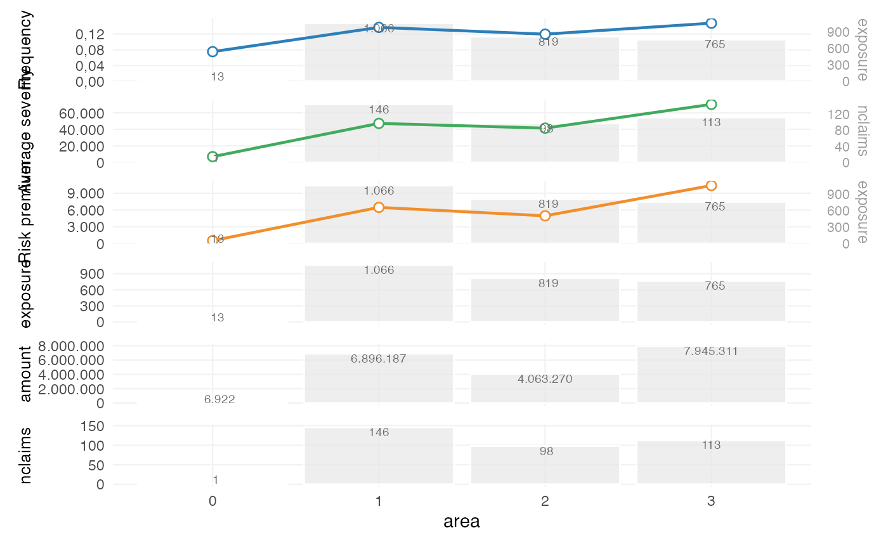

Automatically create a ggplot for objects obtained from factor analysis
Source:R/univariate.R
autoplot.univariate.RdTakes an object produced by factor_analysis(), univariate_summary()
(compatibility alias) or univariate() (deprecated NSE interface) and plots
the available statistics.
Usage
# S3 method for class 'univariate'
autoplot(
object,
show_plots = 1:9,
ncol = 1,
background = TRUE,
labels = TRUE,
sort = FALSE,
sort_manual = NULL,
dec.mark = ",",
color = NULL,
color_bg = NULL,
label_width = 50,
coord_flip = FALSE,
show_total = FALSE,
total_color = NULL,
total_name = NULL,
rotate_angle = NULL,
custom_theme = NULL,
remove_underscores = FALSE,
remove_x_elements = TRUE,
...
)Arguments
- object
A
univariateobject produced byfactor_analysis(),univariate_summary()orunivariate().- show_plots
Numeric vector of plots to be shown (default is
1:9). There are nine available plots:1. Frequency (
nclaims / exposure)2. Average severity (
severity / nclaims)3. Risk premium (
severity / exposure)4. Loss ratio (
severity / premium)5. Average premium (
premium / exposure)6. Exposure
7. Severity
8. Number of claims
9. Premium
- ncol
Number of columns in output (default = 1).
- background
Show exposure as a background histogram (default = TRUE).
- labels
Show labels with the exposure (default = TRUE).
- sort
Sort (order) risk factor into descending order by exposure (default = FALSE).
- sort_manual
Sort risk factor into a custom order; character vector (default = NULL).
- dec.mark
Decimal mark; defaults to
",".- color
Optional override for line/point color. If NULL (default), colors are taken from the internal palette. If specified, the chosen color is applied to all line-based plots.
- color_bg
Optional override for background bar color. If NULL (default), the background color is taken from the internal palette. If specified, the chosen color is applied to all background bars.
- label_width
Width of labels on the x-axis (default = 10).
- coord_flip
Flip cartesian coordinates (default = FALSE).
- show_total
Show line for total if
byis used (default = FALSE).- total_color
Color for total line (default =
"black").- total_name
Legend name for total line (default = NULL).
- rotate_angle
Numeric value for angle of labels on the x-axis (degrees).
- custom_theme
List with customized theme options.
- remove_underscores
Logical; remove underscores from labels (default = FALSE).
- remove_x_elements
Logical. When
TRUEandncol == 1, x-axis components are removed from all plots except the last one. The following elements are suppressed:axis.title.xaxis.text.xaxis.ticks.x
This prevents duplicated x-axes in vertically stacked patchwork plots. Defaults to
TRUE.- ...
Other plotting parameters.
Examples
## --- New usage (SE, recommended) ---
x <- factor_analysis(MTPL2,
x = "area",
severity = "amount",
nclaims = "nclaims",
exposure = "exposure")
autoplot(x)
#> Ignoring plots 4, 5, 9: required column(s) not available in object

## --- Compatibility alias ---
x2 <- univariate_summary(MTPL2,
x = "area",
severity = "amount",
nclaims = "nclaims",
exposure = "exposure")
autoplot(x2)
#> Ignoring plots 4, 5, 9: required column(s) not available in object
 ## --- Deprecated usage (NSE) ---
x_old <- univariate(MTPL2, x = area, severity = amount,
nclaims = nclaims, exposure = exposure)
#> Warning: `univariate()` was deprecated in insurancerating 0.8.0.
#> ℹ Please use `factor_analysis()` instead.
autoplot(x_old)
#> Ignoring plots 4, 5, 9: required column(s) not available in object
## --- Deprecated usage (NSE) ---
x_old <- univariate(MTPL2, x = area, severity = amount,
nclaims = nclaims, exposure = exposure)
#> Warning: `univariate()` was deprecated in insurancerating 0.8.0.
#> ℹ Please use `factor_analysis()` instead.
autoplot(x_old)
#> Ignoring plots 4, 5, 9: required column(s) not available in object